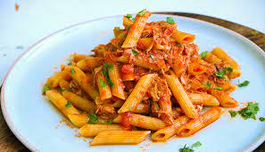

Ingredients:
- 200g pasta (spaghetti or fettuccine)
- 2 tbsp butter
- 4 cloves garlic, minced
- 1 cup heavy cream
- 1/2 cup grated Parmesan cheese
- 1 tsp Italian seasoning
- Salt and black pepper to taste
- Fresh parsley for garnish
Instructions:
- Cook pasta according to package instructions and drain.
- In a pan, melt butter and sauté garlic until fragrant.
- Add heavy cream and simmer for 2 minutes.
- Stir in Parmesan cheese, Italian seasoning, salt, and pepper.
- Add the cooked pasta and toss until coated.
- Garnish with fresh parsley and serve warm.